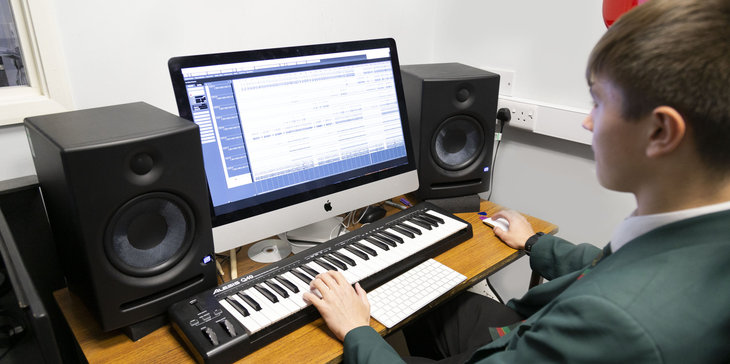
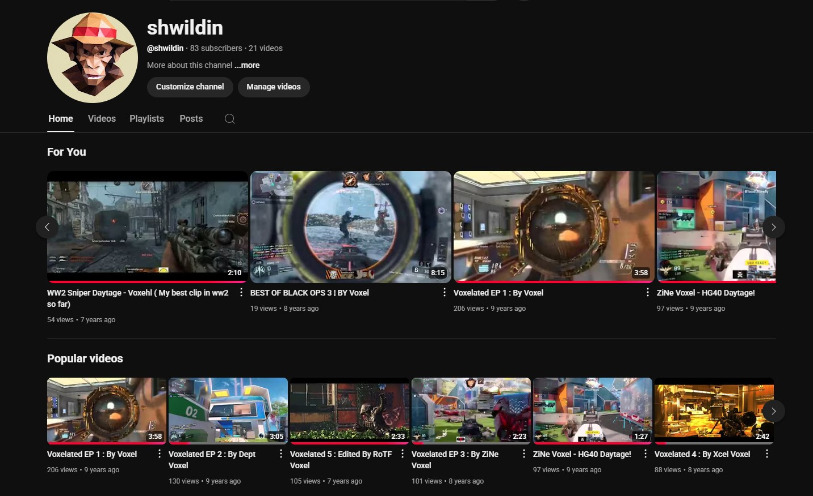

Pre-College
In secondary school I chose to do a Computer Science GCSE, as well as a Music Technology BTEC. The music technology course in my school was barely even able to run as it only had 7 people wanting to take it, and I can't imagine where I would be right now if it hadn't been able to run.
Looking back, I don't think either of these classes were as informative as they could have been, however they still taught valuable skills such as basic Python skills and programming principles in computer science; the principles of audio FX and using a DAW (Cubase 8 Elements).
My GCSEs would eventually be cancelled due to the Covid-19 pandemic, but I achieved a grade 7 in Computer Science and a merit in Music Technology.
GCSE Results
- Maths – 9
- Combined Science – 8-8
- Computer Science – 7
- English Language – 7
- History – 7
- Religious Studies – 7
- French – 7
- English Literature – 6
- Level 2 Music Technology – Merit
Childhood YouTube
When I was younger, like most kids now-a-days I was absolutely obsessed with YouTubers and gaming, so when youre a teenager with an Xbox and a laptop, what else to do except making YouTube videos?
Originally I was making YouTube montages of me playing Call of Duty with my friends getting cool clips and putting music behind them, but eventually I started trying to create actual good montages with synced up audio with the beats on games like Fortnite, Rainbow Six Siege and lots of Call of Duties.
Looking back on these videos now, I wouldn't say that any of them are good or recommend anyone watch them, but they were instrumental in me getting into audio and sound and I am still proud of the work I put into them when I was around 13/14.
